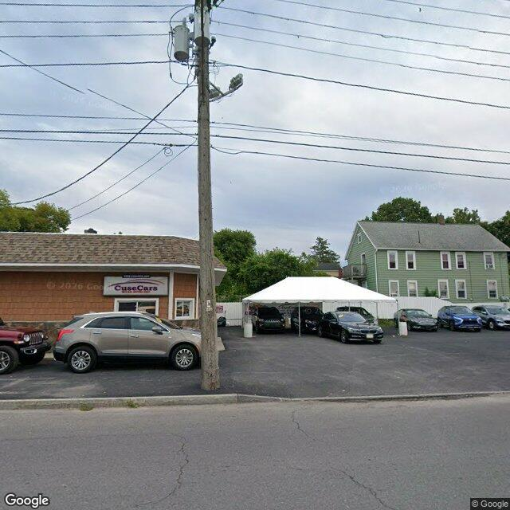

Property entry
1618 First North St
Published 2026-06-07T15:43:35+00:00
Parcel key: 003-01-280

AI image read
The image shows a commercial used car lot with a white canopy tent and parked vehicles, situated next to a two-story green residential building.
Property type guess: unclear
Visible conditions
- Paved parking lot containing multiple vehicles under a white canopy tent
- One-story commercial building with brown siding and a shingled roof on the left
- Two-story green residential-style building with a pitched roof on the right
Condition scores
- Roof
- good
- Siding Or Facade
- good
- Windows Doors
- good
- Porch Or Entry
- unclear
- Yard Or Lot
- good
- Trash Debris
- none_visible
- Vegetation Overgrowth
- none_visible
Visible flags
- Boarded Windows Or Doors
- no
- Fire Damage Visible
- no
- Structural Damage Visible
- no
- Vacancy Signs Visible
- no
- Active Construction Visible
- no
Possible image-only flags
- No items reported.
AI review boxes
- No items reported.
Review reasons
- AI requested human review
Image quality
- Available
- True
- Bytes
- 73237
- Needs Rerun
- False
['The image captures both a commercial car lot and a residential structure, making it difficult to definitively identify which building corresponds to the target parcel address without parcel boundary overlays.']
ACS tract context
Census Tract 2; Onondaga County; New York
- Total population
- 3511
- Median household income
- 51848
- Poverty rate
- 28.1
- Housing units
- 1686
- Vacancy rate
- 14.7
- Renter-occupied share
- 50.1
- Median gross rent
- 146700
OpenStreetMap nearby
meter search radius
OpenStreetMap lookup failed: HTTP Error 504: Gateway Timeout
Vacant properties 0
No matching records found in this feed.
Rental registry 3
- Latitude
- 43.07526698
- Longitude
- -76.16273938
- NeedsRR
- Yes
- ObjectId
- 779
- PropertyAddress
- 1618 First North St
- RR_contact_name
- Demauro Holdings, LLC
- Latitude
- 43.07511904
- Longitude
- -76.16235897
- NeedsRR
- Yes
- ObjectId
- 776
- PropertyAddress
- 1610 First North St
- RRisValid
- No
- Latitude
- 43.07519248
- Longitude
- -76.16254201
- NeedsRR
- Yes
- ObjectId
- 778
- PropertyAddress
- 1614 First North St
- RR_app_received
- 1779062400000
Code violations 0
No matching records found in this feed.
Unfit properties 0
No matching records found in this feed.